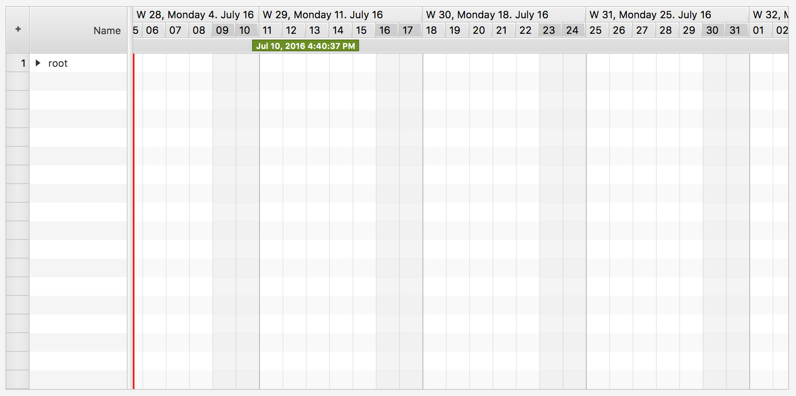

Klasse GanttChart<R extends Row<?,?,?>>
java.lang.Object
javafx.scene.Node
javafx.scene.Parent
javafx.scene.layout.Region
javafx.scene.control.Control
com.flexganttfx.view.util.FlexGanttFXControl
com.flexganttfx.view.GanttChartBase<R>
com.flexganttfx.view.GanttChart<R>
- Typparameter:
R- the type of the rows shown by the Gantt chart (e.g. "Aircraft")
- Alle implementierten Schnittstellen:
Styleable,EventTarget,Skinnable
A control used to visualize any kind of scheduling data along a
timeline. The model data needed by the control consists of rows with
activities, links between activities, and layers to group activities
together.
setRoot(Row)- sets the root row.GanttChartBase.getLayers()- returns the list of layersGanttChartBase.getLinks()- returns the list of links between activities
The control consists of several children controls:
TreeTableView: shown on the left-hand side to display a hierarchical structure of rowsGraphicsBase: shown on the right-hand side to display a graphical representation of the model dataTimeline: shown above the graphics view. The timeline itself consists of two child controls.Dateline: displays days, weeks, months, years, etc...Eventline: displays various time markers

Master / Detail Panes
The Gantt chart uses two MasterDetailPane instances from ControlsFX for the high-level layout. The tree table master detail pane displays the tree table as its detail node. The graphics master detail pane displays a property sheet as its detail node. The property sheet is used at development time and can be replaced with any node by callingGanttChartBase.setDetail(Node). The property
sheet displays a lot of properties that are used by the controls, the
renderers, the system layers to fine-tune the appearance of the control. Many
of them can be changed at runtime.
Standalone vs. Multi- / Dual Gantt Chart
A Gantt chart can be used standalone or inside aMultiGanttChartContainer or
DualGanttChartContainer. When used in one of these containers the
Position of the Gantt chart becomes important. The control can be the
first chart, the last chart, the only chart, or a chart somewhere in the
middle. A "first" or "only" chart always displays a timeline. A "middle" or
"last" displays a special header (see GanttChartBase.setGraphicsHeader(Node)). The
containers are also the reason why the control distinguishes between a
timeline (GanttChartBase.getTimeline()) and a master timeline (
GanttChartBase.getMasterTimeline()). The master timeline is the one shown by the
"first" chart, while the regular timeline is the one that belongs directly to
an individual Gantt chart instance.
Code Example
import java.time.Duration;
import java.time.Instant;
import java.time.temporal.ChronoUnit;
import javafx.application.Application;
import javafx.scene.Scene;
import javafx.stage.Stage;
import com.flexganttfx.model.GanttChartModel;
import com.flexganttfx.model.Layer;
import com.flexganttfx.model.Row;
import com.flexganttfx.model.activity.MutableActivityBase;
import com.flexganttfx.model.layout.GanttLayout;
import com.flexganttfx.view.GanttChart;
import com.flexganttfx.view.graphics.GraphicsView;
import com.flexganttfx.view.graphics.renderer.ActivityBarRenderer;
import com.flexganttfx.view.timeline.Timeline;
public class TutorialAircraftFlight extends Application {
class FlightData {
String flightNo;
Instant departureTime = Instant.now();
Instant arrivalTime = Instant.now().plus(Duration.ofHours(6));
public FlightData(String flightNo, int day) {
this.flightNo = flightNo;
departureTime = departureTime.plus(Duration.ofDays(day));
arrivalTime = arrivalTime.plus(Duration.ofDays(day));
}
}
class Flight extends MutableActivityBase<FlightData> {
public Flight(FlightData data) {
setUserObject(data);
setName(data.flightNo);
setStartTime(data.departureTime);
setEndTime(data.arrivalTime);
}
}
class Aircraft extends Row<Aircraft, Aircraft, Flight> {
public Aircraft(String name) {
super(name);
}
}
public void start(Stage stage) {
// Create the root row
Aircraft root = new Aircraft("Root");
root.setExpanded(true);
// Create the Gantt chart
GanttChart<Aircraft> gantt = new GanttChart<>(new FlightSchedule(new Aircraft("ROOT")));
Layer flightsLayer = new Layer("Flights");
gantt.getLayers().add(flightsLayer);
Aircraft b747 = new Aircraft("B747");
b747.addActivity(flightsLayer, new Flight(new FlightData("flight1", 1)));
b747.addActivity(flightsLayer, new Flight(new FlightData("flight2", 2)));
b747.addActivity(flightsLayer, new Flight(new FlightData("flight3", 3)));
Aircraft a380 = new Aircraft("A380");
a380.addActivity(flightsLayer, new Flight(new FlightData("flight1", 1)));
a380.addActivity(flightsLayer, new Flight(new FlightData("flight2", 2)));
a380.addActivity(flightsLayer, new Flight(new FlightData("flight3", 3)));
root.getChildren().setAll(b747, a380);
Timeline timeline = gantt.getTimeline();
timeline.showTemporalUnit(ChronoUnit.HOURS, 10);
GraphicsView<Aircraft> graphics = gantt.getGraphics();
graphics.setActivityRenderer(Flight.class, GanttLayout.class,
new ActivityBarRenderer<>(graphics, "Flight Renderer"));
graphics.showEarliestActivities();
Scene scene = new Scene(gantt);
stage.setScene(scene);
stage.sizeToScene();
stage.centerOnScreen();
stage.show();
}
public static void main(String[] args) {
launch(args);
}
- Seit:
- 1.0
-
Verschachtelte Klassen - Übersicht
Verschachtelte KlassenModifizierer und TypKlasseBeschreibungstatic enumAn enum used for specifying how to layout the Gantt chart.static enumAn enum used to control the visuals of the cells in the row header column.Von Klasse geerbte verschachtelte Klassen/Schnittstellen com.flexganttfx.view.GanttChartBase
GanttChartBase.ScrollBarType -
Eigenschaftsübersicht
EigenschaftenTypEigenschaftBeschreibungA property used to specify the mode in which the Gantt chart will layout its primary views, the table and the graphics.final ObjectProperty<R> Returns the root row property.final ObjectProperty<Callback<R, Node>> A property used to store a callback for creating a node that will be placed to the left of each row in the tree table view.A property used to store the currently used type of row headers (row number, level number, custom graphics).final BooleanPropertyA property used to control whether the tree table view will be shown or not.final BooleanPropertyThis controls whether a menu button is available when the user clicks in a designated space within the TreeTableView, within which is a check menu item for each column in this table.Von Klasse geerbte Eigenschaften com.flexganttfx.view.GanttChartBase
autoHideScrollBar, detail, fixedCellSize, graphicsHeader, masterTimeline, position, rowFilter, scrollBarType, showDetailVon Klasse geerbte Eigenschaften javafx.scene.control.Control
contextMenu, skin, tooltipVon Klasse geerbte Eigenschaften javafx.scene.layout.Region
background, border, cacheShape, centerShape, height, insets, maxHeight, maxWidth, minHeight, minWidth, opaqueInsets, padding, prefHeight, prefWidth, scaleShape, shape, snapToPixel, widthVon Klasse geerbte Eigenschaften javafx.scene.Parent
needsLayoutVon Klasse geerbte Eigenschaften javafx.scene.Node
accessibleHelp, accessibleRoleDescription, accessibleRole, accessibleText, blendMode, boundsInLocal, boundsInParent, cacheHint, cache, clip, cursor, depthTest, disabled, disable, effectiveNodeOrientation, effect, eventDispatcher, focused, focusTraversable, focusVisible, focusWithin, hover, id, inputMethodRequests, layoutBounds, layoutX, layoutY, localToParentTransform, localToSceneTransform, managed, mouseTransparent, nodeOrientation, onContextMenuRequested, onDragDetected, onDragDone, onDragDropped, onDragEntered, onDragExited, onDragOver, onInputMethodTextChanged, onKeyPressed, onKeyReleased, onKeyTyped, onMouseClicked, onMouseDragEntered, onMouseDragExited, onMouseDragged, onMouseDragOver, onMouseDragReleased, onMouseEntered, onMouseExited, onMouseMoved, onMousePressed, onMouseReleased, onRotate, onRotationFinished, onRotationStarted, onScrollFinished, onScroll, onScrollStarted, onSwipeDown, onSwipeLeft, onSwipeRight, onSwipeUp, onTouchMoved, onTouchPressed, onTouchReleased, onTouchStationary, onZoomFinished, onZoom, onZoomStarted, opacity, parent, pickOnBounds, pressed, rotate, rotationAxis, scaleX, scaleY, scaleZ, scene, style, translateX, translateY, translateZ, viewOrder, visible -
Feldübersicht
Von Klasse geerbte Felder javafx.scene.layout.Region
USE_COMPUTED_SIZE, USE_PREF_SIZEVon Klasse geerbte Felder javafx.scene.Node
BASELINE_OFFSET_SAME_AS_HEIGHT -
Konstruktorübersicht
KonstruktorenKonstruktorBeschreibungConstructs a new Gantt chart control.GanttChart(R root) Constructs a new Gantt Chart control. -
Methodenübersicht
Modifizierer und TypMethodeBeschreibungfinal voidCollapses all rows inside the Gantt chart.final voidCollapses the hightest level of rows inside the Gantt chart that is currently being used.protected Skin<?> protected RowHeaderColumn<R> Creates the row header column used by the Gantt chart.protected TreeTableView<R> Creates the tree table view instance.A property used to specify the mode in which the Gantt chart will layout its primary views, the table and the graphics.final voidExpands all rows inside the Gantt chart.final voidExpands the next level of rows inside the Gantt chart.final GanttChart.DisplayModeReturns the value ofdisplayModeProperty().final RgetRoot()Returns the root row of the Gantt chart.final RowHeaderColumn<R> Returns the row header control used as the first column of the tree table view.Returns the value ofrowHeaderNodeFactoryProperty().final GanttChart.RowHeaderTypeReturns the value ofrowHeaderTypeProperty().final TreeTableView<R> Returns theTreeTableViewinstance that is shown on the left-hand side of the Gantt chart.Returns the primaryMasterDetailPaneinstance that is being used to display theTreeTableViewand theListViewGraphics.final ScrollBarReturns the scrollbar that is being used for horizontal scrolling operations of the tree table view.final booleanReturns the value ofshowTreeTableProperty().final booleanReturns the value oftableMenuButtonVisibleProperty().final voidresizeColumn(TreeTableColumn<R, ?> column) This method will resize the given column in the tree table view to ensure that the content of the column cells will be completely visible.final voidresizeColumn(TreeTableColumn tc, int maxRows) This method will resize the given column in the tree table view to ensure that the content of the column cells will be completely visible.final voidThis method will resize all columns in the tree table view to ensure that the content of all cells will be completely visible.final voidresizeColumns(int maxRows) This method will resize all columns in the tree table view to ensure that the content of all cells will be completely visible.final ObjectProperty<R> Returns the root row property.final ObjectProperty<Callback<R, Node>> A property used to store a callback for creating a node that will be placed to the left of each row in the tree table view.A property used to store the currently used type of row headers (row number, level number, custom graphics).final voidSets the value of thedisplayModeProperty().final voidSets a new root on the Gantt chart, which will cause the framework to set a new root of typeGanttChartTreeItemon the underlyingTreeTableView.final voidsetRowHeaderNodeFactory(Callback<R, Node> factory) Sets the value ofrowHeaderNodeFactoryProperty().final voidSets the value ofrowHeaderTypeProperty().final voidsetShowTreeTable(boolean show) Sets the value ofshowTreeTableProperty().final voidsetTableMenuButtonVisible(boolean value) Sets the value oftableMenuButtonVisibleProperty().final BooleanPropertyA property used to control whether the tree table view will be shown or not.final BooleanPropertyThis controls whether a menu button is available when the user clicks in a designated space within the TreeTableView, within which is a check menu item for each column in this table.Von Klasse geerbte Methoden com.flexganttfx.view.GanttChartBase
autoHideScrollBarProperty, createGraphics, createHorizonScrollBar, createTimeline, createTimelineScrollBar, detailProperty, fixedCellSizeProperty, getCalendars, getDetail, getFixedCellSize, getGraphics, getGraphicsHeader, getGraphicsMasterDetailPane, getHorizonScrollBar, getLayers, getLinks, getMasterTimeline, getPosition, getRowFilter, getScrollBarType, getTimeline, getTimelineScrollBar, getUserAgentStylesheet, graphicsHeaderProperty, isAutoHideScrollBar, isShowDetail, masterTimelineProperty, positionProperty, redrawObservable, rowFilterProperty, scrollBarTypeProperty, setAutoHideScrollBar, setDetail, setFixedCellSize, setGraphicsHeader, setMasterTimeline, setPosition, setRowFilter, setScrollBarType, setShowDetail, showDetailPropertyVon Klasse geerbte Methoden com.flexganttfx.view.util.FlexGanttFXControl
getUserAgentStylesheetVon Klasse geerbte Methoden javafx.scene.control.Control
computeMaxHeight, computeMaxWidth, computeMinHeight, computeMinWidth, computePrefHeight, computePrefWidth, contextMenuProperty, executeAccessibleAction, getBaselineOffset, getClassCssMetaData, getContextMenu, getControlCssMetaData, getCssMetaData, getInitialFocusTraversable, getSkin, getTooltip, isResizable, layoutChildren, queryAccessibleAttribute, setContextMenu, setSkin, setTooltip, skinProperty, tooltipPropertyVon Klasse geerbte Methoden javafx.scene.layout.Region
backgroundProperty, borderProperty, cacheShapeProperty, centerShapeProperty, getBackground, getBorder, getHeight, getInsets, getMaxHeight, getMaxWidth, getMinHeight, getMinWidth, getOpaqueInsets, getPadding, getPrefHeight, getPrefWidth, getShape, getWidth, heightProperty, insetsProperty, isCacheShape, isCenterShape, isScaleShape, isSnapToPixel, layoutInArea, layoutInArea, layoutInArea, layoutInArea, maxHeight, maxHeightProperty, maxWidth, maxWidthProperty, minHeight, minHeightProperty, minWidth, minWidthProperty, opaqueInsetsProperty, paddingProperty, positionInArea, positionInArea, prefHeight, prefHeightProperty, prefWidth, prefWidthProperty, resize, scaleShapeProperty, setBackground, setBorder, setCacheShape, setCenterShape, setHeight, setMaxHeight, setMaxSize, setMaxWidth, setMinHeight, setMinSize, setMinWidth, setOpaqueInsets, setPadding, setPrefHeight, setPrefSize, setPrefWidth, setScaleShape, setShape, setSnapToPixel, setWidth, shapeProperty, snappedBottomInset, snappedLeftInset, snappedRightInset, snappedTopInset, snapPosition, snapPositionX, snapPositionY, snapSize, snapSizeX, snapSizeY, snapSpace, snapSpaceX, snapSpaceY, snapToPixelProperty, widthPropertyVon Klasse geerbte Methoden javafx.scene.Parent
getChildren, getChildrenUnmodifiable, getManagedChildren, getStylesheets, isNeedsLayout, layout, lookup, needsLayoutProperty, requestLayout, requestParentLayout, setNeedsLayout, updateBoundsVon Klasse geerbte Methoden javafx.scene.Node
accessibleHelpProperty, accessibleRoleDescriptionProperty, accessibleRoleProperty, accessibleTextProperty, addEventFilter, addEventHandler, applyCss, autosize, blendModeProperty, boundsInLocalProperty, boundsInParentProperty, buildEventDispatchChain, cacheHintProperty, cacheProperty, clipProperty, computeAreaInScreen, contains, contains, cursorProperty, depthTestProperty, disabledProperty, disableProperty, effectiveNodeOrientationProperty, effectProperty, eventDispatcherProperty, fireEvent, focusedProperty, focusTraversableProperty, focusVisibleProperty, focusWithinProperty, getAccessibleHelp, getAccessibleRole, getAccessibleRoleDescription, getAccessibleText, getBlendMode, getBoundsInLocal, getBoundsInParent, getCacheHint, getClip, getContentBias, getCursor, getDepthTest, getEffect, getEffectiveNodeOrientation, getEventDispatcher, getId, getInitialCursor, getInputMethodRequests, getLayoutBounds, getLayoutX, getLayoutY, getLocalToParentTransform, getLocalToSceneTransform, getNodeOrientation, getOnContextMenuRequested, getOnDragDetected, getOnDragDone, getOnDragDropped, getOnDragEntered, getOnDragExited, getOnDragOver, getOnInputMethodTextChanged, getOnKeyPressed, getOnKeyReleased, getOnKeyTyped, getOnMouseClicked, getOnMouseDragEntered, getOnMouseDragExited, getOnMouseDragged, getOnMouseDragOver, getOnMouseDragReleased, getOnMouseEntered, getOnMouseExited, getOnMouseMoved, getOnMousePressed, getOnMouseReleased, getOnRotate, getOnRotationFinished, getOnRotationStarted, getOnScroll, getOnScrollFinished, getOnScrollStarted, getOnSwipeDown, getOnSwipeLeft, getOnSwipeRight, getOnSwipeUp, getOnTouchMoved, getOnTouchPressed, getOnTouchReleased, getOnTouchStationary, getOnZoom, getOnZoomFinished, getOnZoomStarted, getOpacity, getParent, getProperties, getPseudoClassStates, getRotate, getRotationAxis, getScaleX, getScaleY, getScaleZ, getScene, getStyle, getStyleableParent, getStyleClass, getTransforms, getTranslateX, getTranslateY, getTranslateZ, getTypeSelector, getUserData, getViewOrder, hasProperties, hoverProperty, idProperty, inputMethodRequestsProperty, intersects, intersects, isCache, isDisable, isDisabled, isFocused, isFocusTraversable, isFocusVisible, isFocusWithin, isHover, isManaged, isMouseTransparent, isPickOnBounds, isPressed, isVisible, layoutBoundsProperty, layoutXProperty, layoutYProperty, localToParent, localToParent, localToParent, localToParent, localToParent, localToParentTransformProperty, localToScene, localToScene, localToScene, localToScene, localToScene, localToScene, localToScene, localToScene, localToScene, localToScene, localToSceneTransformProperty, localToScreen, localToScreen, localToScreen, localToScreen, localToScreen, lookupAll, managedProperty, mouseTransparentProperty, nodeOrientationProperty, notifyAccessibleAttributeChanged, onContextMenuRequestedProperty, onDragDetectedProperty, onDragDoneProperty, onDragDroppedProperty, onDragEnteredProperty, onDragExitedProperty, onDragOverProperty, onInputMethodTextChangedProperty, onKeyPressedProperty, onKeyReleasedProperty, onKeyTypedProperty, onMouseClickedProperty, onMouseDragEnteredProperty, onMouseDragExitedProperty, onMouseDraggedProperty, onMouseDragOverProperty, onMouseDragReleasedProperty, onMouseEnteredProperty, onMouseExitedProperty, onMouseMovedProperty, onMousePressedProperty, onMouseReleasedProperty, onRotateProperty, onRotationFinishedProperty, onRotationStartedProperty, onScrollFinishedProperty, onScrollProperty, onScrollStartedProperty, onSwipeDownProperty, onSwipeLeftProperty, onSwipeRightProperty, onSwipeUpProperty, onTouchMovedProperty, onTouchPressedProperty, onTouchReleasedProperty, onTouchStationaryProperty, onZoomFinishedProperty, onZoomProperty, onZoomStartedProperty, opacityProperty, parentProperty, parentToLocal, parentToLocal, parentToLocal, parentToLocal, parentToLocal, pickOnBoundsProperty, pressedProperty, pseudoClassStateChanged, relocate, removeEventFilter, removeEventHandler, requestFocus, resizeRelocate, rotateProperty, rotationAxisProperty, scaleXProperty, scaleYProperty, scaleZProperty, sceneProperty, sceneToLocal, sceneToLocal, sceneToLocal, sceneToLocal, sceneToLocal, sceneToLocal, sceneToLocal, sceneToLocal, screenToLocal, screenToLocal, screenToLocal, setAccessibleHelp, setAccessibleRole, setAccessibleRoleDescription, setAccessibleText, setBlendMode, setCache, setCacheHint, setClip, setCursor, setDepthTest, setDisable, setDisabled, setEffect, setEventDispatcher, setEventHandler, setFocused, setFocusTraversable, setHover, setId, setInputMethodRequests, setLayoutX, setLayoutY, setManaged, setMouseTransparent, setNodeOrientation, setOnContextMenuRequested, setOnDragDetected, setOnDragDone, setOnDragDropped, setOnDragEntered, setOnDragExited, setOnDragOver, setOnInputMethodTextChanged, setOnKeyPressed, setOnKeyReleased, setOnKeyTyped, setOnMouseClicked, setOnMouseDragEntered, setOnMouseDragExited, setOnMouseDragged, setOnMouseDragOver, setOnMouseDragReleased, setOnMouseEntered, setOnMouseExited, setOnMouseMoved, setOnMousePressed, setOnMouseReleased, setOnRotate, setOnRotationFinished, setOnRotationStarted, setOnScroll, setOnScrollFinished, setOnScrollStarted, setOnSwipeDown, setOnSwipeLeft, setOnSwipeRight, setOnSwipeUp, setOnTouchMoved, setOnTouchPressed, setOnTouchReleased, setOnTouchStationary, setOnZoom, setOnZoomFinished, setOnZoomStarted, setOpacity, setPickOnBounds, setPressed, setRotate, setRotationAxis, setScaleX, setScaleY, setScaleZ, setStyle, setTranslateX, setTranslateY, setTranslateZ, setUserData, setViewOrder, setVisible, snapshot, snapshot, startDragAndDrop, startFullDrag, styleProperty, toBack, toFront, toString, translateXProperty, translateYProperty, translateZProperty, usesMirroring, viewOrderProperty, visiblePropertyVon Klasse geerbte Methoden java.lang.Object
clone, equals, finalize, getClass, hashCode, notify, notifyAll, wait, wait, waitVon Schnittstelle geerbte Methoden javafx.css.Styleable
getStyleableNode
-
Eigenschaftsdetails
-
displayMode
A property used to specify the mode in which the Gantt chart will layout its primary views, the table and the graphics. Using this property the application can quickly switch between a standard, table-only, or graphics-only display.- Seit:
- 1.0
- Siehe auch:
-
tableMenuButtonVisible
This controls whether a menu button is available when the user clicks in a designated space within the TreeTableView, within which is a check menu item for each column in this table. This menu allows for the user to show and hide all TreeTableColumns easily.- Seit:
- 1.0
- Siehe auch:
-
root
Returns the root row property. The root row will become the root node of the Gantt chart's tree table control on the left-hand side (wrapped inside an instance of typeGanttChartTreeItem). Other rows can be added by adding them to the root row or one of its children.- Seit:
- 1.0
- Siehe auch:
-
showTreeTable
A property used to control whether the tree table view will be shown or not. This node gets shown on the left-hand side of the Gantt chart and dispays a hierarchy (e.g. a resource hierarchy). The tree table view is the detail node of the primary master detail pane (seegetTreeTableMasterDetailPane()).- Seit:
- 1.0
- Siehe auch:
-
rowHeaderType
A property used to store the currently used type of row headers (row number, level number, custom graphics).- Seit:
- 1.0
- Siehe auch:
-
rowHeaderNodeFactory
A property used to store a callback for creating a node that will be placed to the left of each row in the tree table view. This factory will only be invoked if the row header type is set toGanttChart.RowHeaderType.GRAPHIC_NODE.- Seit:
- 1.0
- Siehe auch:
-
-
Konstruktordetails
-
GanttChart
public GanttChart()Constructs a new Gantt chart control.- Seit:
- 1.0
-
GanttChart
Constructs a new Gantt Chart control.- Parameter:
root- the root row of the Gantt chart- Seit:
- 1.0
-
-
Methodendetails
-
createDefaultSkin
- Setzt außer Kraft:
createDefaultSkinin KlasseControl
-
displayModeProperty
A property used to specify the mode in which the Gantt chart will layout its primary views, the table and the graphics. Using this property the application can quickly switch between a standard, table-only, or graphics-only display.- Gibt zurück:
- the current display mode
- Seit:
- 1.0
- Siehe auch:
-
setDisplayMode
Sets the value of thedisplayModeProperty().- Parameter:
mode- the new display mode- Seit:
- 1.0
-
getDisplayMode
Returns the value ofdisplayModeProperty().- Gibt zurück:
- the display mode (standard, table only, graphics only)
- Seit:
- 1.0
-
createTreeTable
Creates the tree table view instance. Applications can override this method to return a customized table.- Gibt zurück:
- a tree table view instance
- Seit:
- 1.0
-
tableMenuButtonVisibleProperty
This controls whether a menu button is available when the user clicks in a designated space within the TreeTableView, within which is a check menu item for each column in this table. This menu allows for the user to show and hide all TreeTableColumns easily.- Gibt zurück:
- the property used to store the button visibility
- Seit:
- 1.0
- Siehe auch:
-
setTableMenuButtonVisible
public final void setTableMenuButtonVisible(boolean value) Sets the value oftableMenuButtonVisibleProperty().- Parameter:
value- if true, the menu button will be shown to the user- Seit:
- 1.0
-
isTableMenuButtonVisible
public final boolean isTableMenuButtonVisible()Returns the value oftableMenuButtonVisibleProperty().- Gibt zurück:
- true if the table menu button is visible
-
rootProperty
Returns the root row property. The root row will become the root node of the Gantt chart's tree table control on the left-hand side (wrapped inside an instance of typeGanttChartTreeItem). Other rows can be added by adding them to the root row or one of its children.- Gibt zurück:
- the object property used for storing the root row
- Seit:
- 1.0
- Siehe auch:
-
setRoot
Sets a new root on the Gantt chart, which will cause the framework to set a new root of typeGanttChartTreeItemon the underlyingTreeTableView.- Parameter:
root- the new root of the model- Siehe auch:
-
getRoot
Returns the root row of the Gantt chart.- Gibt zurück:
- the root row
- Seit:
- 1.0
-
getRowHeaderColumn
Returns the row header control used as the first column of the tree table view. The row header displays line numbers, or level numbers, or any arbitrary graphics node.- Gibt zurück:
- the row header (column)
-
createRowHeaderColumn
Creates the row header column used by the Gantt chart. Applications can override this method to return a customized row header.- Gibt zurück:
- the row header column
- Seit:
- 1.0
-
getTreeTableScrollBar
Returns the scrollbar that is being used for horizontal scrolling operations of the tree table view.- Gibt zurück:
- the horizontal tree table view scrollbar
- Seit:
- 1.0
-
getTreeTable
Returns theTreeTableViewinstance that is shown on the left-hand side of the Gantt chart.- Gibt zurück:
- the tree table view
- Seit:
- 1.0
- Siehe auch:
-
getTreeTableMasterDetailPane
Returns the primaryMasterDetailPaneinstance that is being used to display theTreeTableViewand theListViewGraphics.- Gibt zurück:
- the primary master detail pane
- Seit:
- 1.6
-
showTreeTableProperty
A property used to control whether the tree table view will be shown or not. This node gets shown on the left-hand side of the Gantt chart and dispays a hierarchy (e.g. a resource hierarchy). The tree table view is the detail node of the primary master detail pane (seegetTreeTableMasterDetailPane()).- Gibt zurück:
- the show tree table property
- Seit:
- 1.0
- Siehe auch:
-
isShowTreeTable
public final boolean isShowTreeTable()Returns the value ofshowTreeTableProperty().- Gibt zurück:
- true if the tree table should be shown
- Seit:
- 1.0
-
setShowTreeTable
public final void setShowTreeTable(boolean show) Sets the value ofshowTreeTableProperty().- Parameter:
show- if true, the tree table becomes visible- Seit:
- 1.0
-
rowHeaderTypeProperty
A property used to store the currently used type of row headers (row number, level number, custom graphics).- Gibt zurück:
- the row header type
- Seit:
- 1.0
- Siehe auch:
-
setRowHeaderType
Sets the value ofrowHeaderTypeProperty().- Parameter:
type- the row header type (row number, level number, graphics)- Seit:
- 1.0
-
getRowHeaderType
Returns the value ofrowHeaderTypeProperty().- Gibt zurück:
- the currently used row header type (line number, level number, custom graphics)
- Seit:
- 1.0
-
rowHeaderNodeFactoryProperty
A property used to store a callback for creating a node that will be placed to the left of each row in the tree table view. This factory will only be invoked if the row header type is set toGanttChart.RowHeaderType.GRAPHIC_NODE.- Gibt zurück:
- the row header node callback property
- Seit:
- 1.0
- Siehe auch:
-
setRowHeaderNodeFactory
Sets the value ofrowHeaderNodeFactoryProperty().- Parameter:
factory- the factory used for creating the row header nodes- Seit:
- 1.0
-
getRowHeaderNodeFactory
Returns the value ofrowHeaderNodeFactoryProperty().- Gibt zurück:
- the row header nodes factory
-
expandRows
public final void expandRows()Expands all rows inside the Gantt chart. This method will use recursion to find all rows that are parents and to expand them.- Seit:
- 1.3
- Siehe auch:
-
expandRowsByOneLevel
public final void expandRowsByOneLevel()Expands the next level of rows inside the Gantt chart. This method will use recursion to find the first rows that are parents and currently not expanded. It will then expand it to make its children visible. Successive calls to this method will eventually show all rows.- Seit:
- 1.3
- Siehe auch:
-
collapseRows
public final void collapseRows()Collapses all rows inside the Gantt chart. This method will use recursion to find all rows that are parents and to collapse them.- Seit:
- 1.3
- Siehe auch:
-
collapseRowsByOneLevel
public final void collapseRowsByOneLevel()Collapses the hightest level of rows inside the Gantt chart that is currently being used. Successive calls to this method will eventually close the entire tree.- Seit:
- 1.3
- Siehe auch:
-
resizeColumns
public final void resizeColumns()This method will resize all columns in the tree table view to ensure that the content of all cells will be completely visible. Note: this is a very expensive operation and should only be used when the number of rows is small.- Seit:
- 1.3
- Siehe auch:
-
resizeColumns
public final void resizeColumns(int maxRows) This method will resize all columns in the tree table view to ensure that the content of all cells will be completely visible. Note: this is a very expensive operation and should only be used with a small number of rows.- Parameter:
maxRows- the maximum number of rows that will be considered for the width calculations- Seit:
- 1.3
- Siehe auch:
-
resizeColumn
This method will resize the given column in the tree table view to ensure that the content of the column cells will be completely visible. Note: this is a very expensive operation and should only be used when the number of rows is small.- Parameter:
column- the column that will be resized- Seit:
- 1.3
- Siehe auch:
-
resizeColumn
This method will resize the given column in the tree table view to ensure that the content of the column cells will be completely visible. Note: this is a very expensive operation and should only be used when the number of rows is small.- Parameter:
tc- the column that will be resizedmaxRows- the maximum number of rows that will be evaluated for the width calculation- Seit:
- 1.3
- Siehe auch:
-